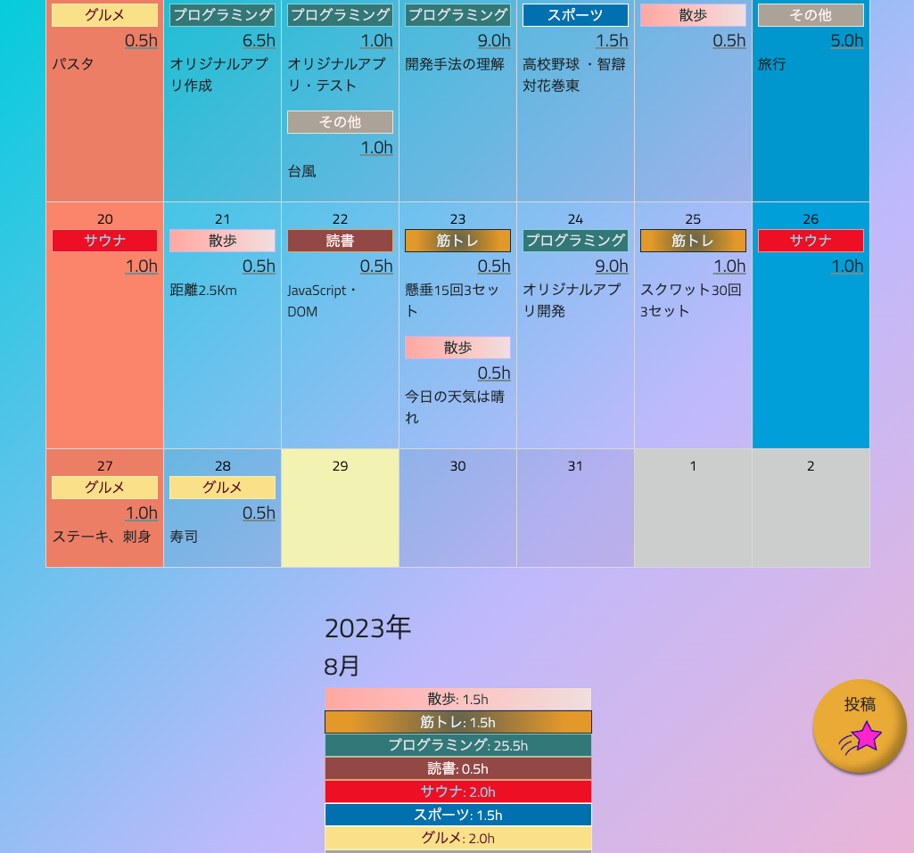

わすレコ（趣味記録カレンダー）
開発環境
HTML / CSS / Ruby / Ruby on Rails / Bootstrap / MySQL / GitHub / Render / Visual Studio Code
-
概要
制作時間 100時間 URL https://wasureco.onrender.com/ ID almin PASS 0000 -
動作テスト
テスト用アカウント
mail 1@a PASS 111111
OUTLINEアプリケーションの概要
趣味の活動記録、活動時間を記録するカレンダーアプリを開発しました。 主な機能は、ユーザー登録機能、趣味の投稿、編集、削除機能です。
投稿ボタンから活動内容の投稿を行うと、トップページのカレンダーに投稿内容が反映されます。投稿された活動内容はジャンルのラベルボタンを押す事で詳細画面に遷移し、編集と削除が行えます。
トップページの下部に、ジャンル別で月の合計活動時間を計測し、表示しています。また、ユーザーのニックネームから手軽に合計活動時間を確認する事ができます。
-
開発に至った経緯
自分の活動内容を記録するアプリが欲しかったことがきっかけです。
学習や筋トレなど一つのジャンルを記録するアプリは多く存在しています。しかし、複数のジャンルを管理できる自分が使いたいと感じるアプリはありませんでした。管理したい項目が複数ある場合、別々のアプリを使用することは面倒だし、操作方法も違うので、管理アプリを管理しなければならないという本末転倒な事態が起きてしまいます。
そこで、一つのアプリで複数の項目をシンプルに管理できるカレンダーアプリを作成したいと考えました。
-
開発で工夫したこと
トップページを見た時に、いつ、何を、どのように、どれくらい行ったのか、直感的に分かりやすく表示する事を意識しました。例えば、ジャンル毎に色分けを行い、確認したい項目をすぐに確認できる工夫をしました。
また、シンプルさと使いたくなるデザインにもこだわりました。毎日使うことを前提としたアプリなので、余計な機能を付けない方が継続して使い易いと考え、投稿してトップページに表示するだけというシンプルな設計にしました。
デザイン面では、使いたくなるボタンのアニメーションや気分が明るくなるような配色を意識して開発に取り組みました。
-
今後実装したいと思っていること
現状、自分専用の仕様になっているので、ユーザー新規登録時に趣味の項目を選べるなどの機能を実装して、他のユーザーでも使い易い仕様に変更したいと考えています。
また、他ユーザーと記録をシェアできる機能やSNS認証を利用したログイン機能などを実装して、より多くの人が使いたくなるアプリに改善していきたいと考えています。
OTHERSその他実績
-
FURIMA（フリマアプリ）
Ruby / Ruby on Rails / MySQL / GitHub / AWS / Render / Visual Studio Code